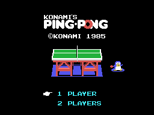
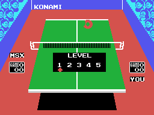
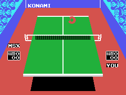

Konami's Ping Pong es tenis de mesa visto desde detrás de un jugador, con la mesa en perspectiva y el rival al fondo. Salió en 1985 como cartucho RC-731 de 16 KB para MSX1.

La pantalla de título ofrece las dos opciones, y el cursor las recorre. Lo que se elige queda en un solo bit: (0xE042) indexa una tabla de dos bytes -0x40 y 0x60- y el que salga va a (0xE002). El bit 5 de ese byte es lo único que el resto del juego mira para saber si enfrente hay una persona o la máquina.
El menú de nivel se pinta encima de la mesa ya montada.

Los cinco valores que ofrece -1, 3, 5, 7 y 9- están en la tabla de 0x461F, y el cursor es el patrón 0x88 puesto en la columna que ella dice. Por dentro el nivel es el índice, de 0 a 4.
El nivel no cambia la velocidad de la pelota: cambia cómo juega la máquina. Entra en tres sitios distintos:
En la demostración que corre sola, el nivel no es el elegido: es el 3 fijo, que lo pone 0x40A9.
Están enteras dentro del cartucho, y se leen en el código porque el tanteo va en BCD:
La partida es al mejor de tres sets. Los ordinales que anuncian cada uno -1ST, 2ND y 3RD- están guardados como tres guiones de seis bytes.
Cuatro rótulos, elegidos por el estado del punto: LET, NET, OUT e IN. Cada uno tiene su melodía en una tabla hermana, indexada por el mismo número.
Y los demás textos que el cartucho lleva escritos: LOVE ALL, GAME, DEUCE, GAME SET, WIN, CHANGE COURT y LEVEL.
Cuando toca cambiar de lado, el cartucho no mueve a los jugadores: permuta los mandos. 0x46EB intercambia los dos bytes de mando de un jugador con los del otro, y a partir de ahí cada uno maneja al muñeco del otro lado.

Se dibuja media y la otra media sale de reflejarla. La imagen de arriba está montada ejecutando en Python los mismos pasos que corre el cartucho, y no se diferencia en ni un byte de la que el emulador tiene en su VRAM.